Rear Driveshaft Reassembly
Rear Driveshaft ReassemblyRear Driveshaft:
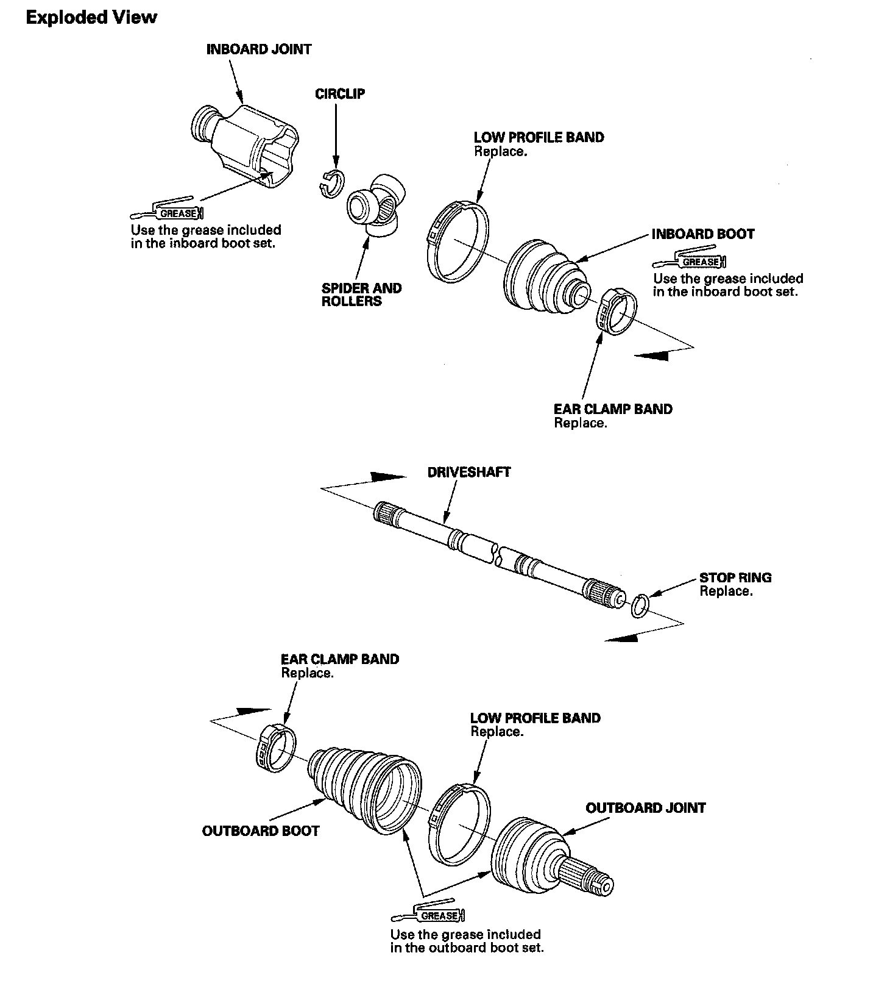
Special Tools Required
Inner handle, 30 mm 07946-MB00000
NOTE: Refer to the Exploded View as needed during this procedure.
Inboard Joint Side
1. Wrap the splines with vinyl tape (A) to prevent damage to the inboard boot.
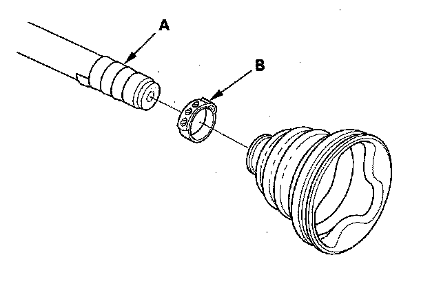
2. Install the new ear clamp bands (B) and inboard boot, then remove the vinyl tape. Be careful not to damage the inboard boot.
3. Install the spider and rollers (A) onto the driveshaft by aligning the marks (B) you made, install it using the inner handle (C).
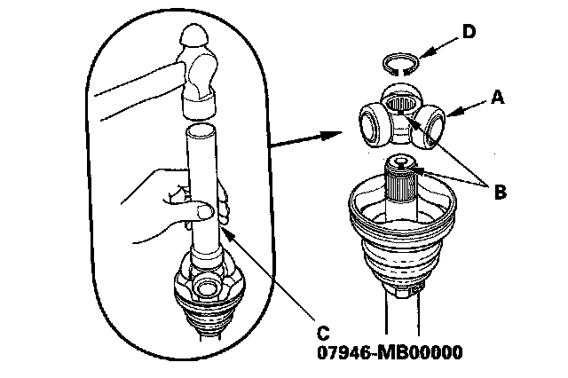
4. Install the circlip (D) into the driveshaft groove. Rotate the circlip in its groove to make sure it is fully seated.
5. Pack the inboard joint with the joint grease included in the new inboard boot set.
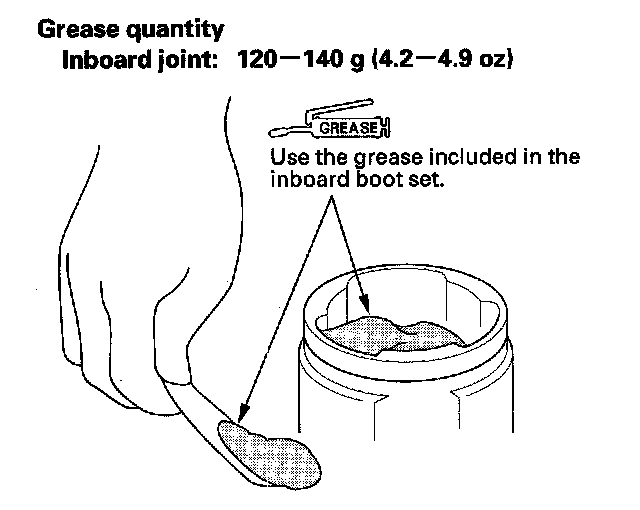
6. Fit the inboard joint onto the driveshaft, and note these items:
^ Reinstall the inboard joint onto the driveshaft by aligning the marks (A) you made on the inboard joint and the rollers.
^ Hold the driveshaft so the inboard joint is pointing up to prevent it from falling off.
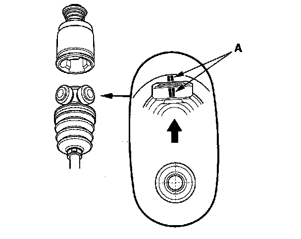
7. Fit the boot ends onto the driveshaft and the inboard joint, then install the new boot band onto the boot.
8. Repeat step 8 for the band on the other end of the boot.
Outboard Joint Side
1. Wrap the splines with vinyl tape (A) to prevent damaging to the outboard boot.
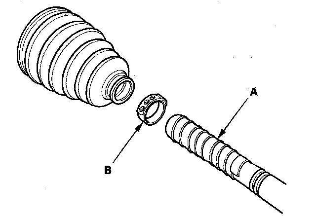
2. Install a new ear clamp band (B) and the outboard boot, then remove the vinyl tape. Be careful not to damage the outboard boot.
3. Install a new stop ring (A) in the driveshaft groove (B).
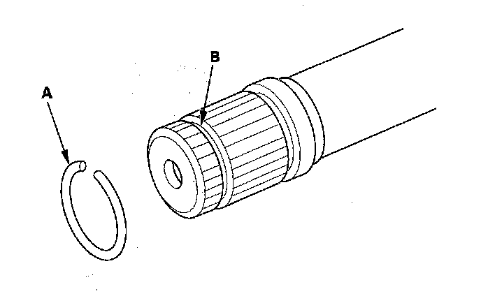
4. Pack about half of the grease included in the new joint boot set into the driveshaft hole in outboard joint. Insert the driveshaft (A) into the outboard joint (B) until the stop ring (C) is closed.
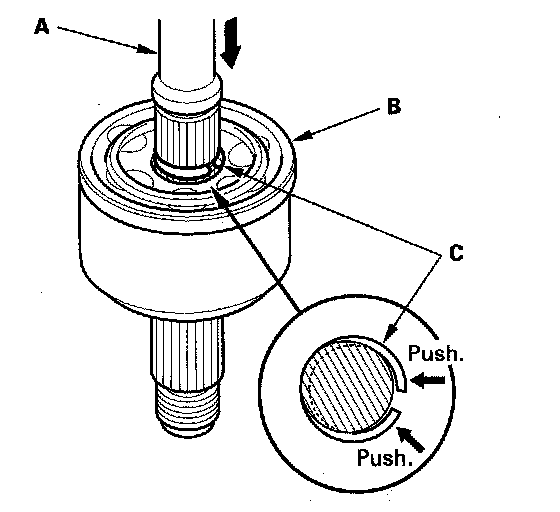
5. To completely seat the outboard joint, pick up the driveshaft and joint, and tap them on a hard surface. Do not use a hammer as excessive force may damage the driveshaft. Be careful not to damage the threaded section (A) of the outboard joint.
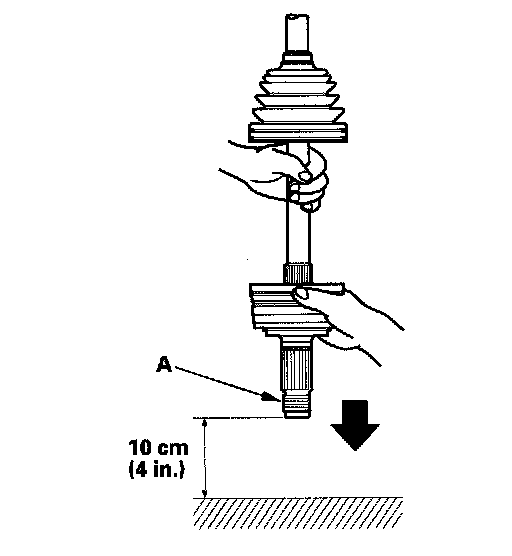
6. Check the alignment of the paint mark (A) you made with the outboard joint end (B).
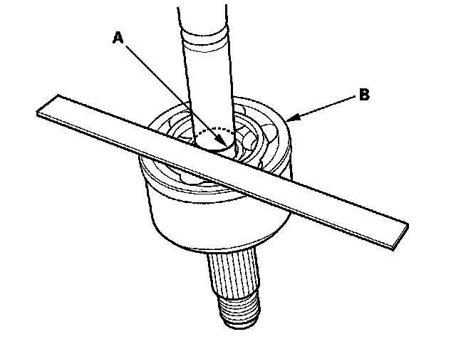
7. Pack the outboard joint (A) with the remaining joint grease included in the new outboard boot set.
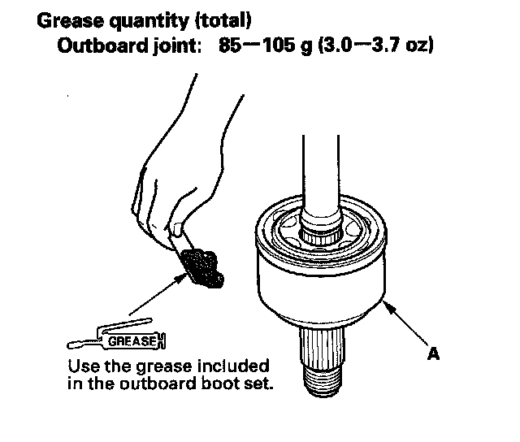
8. Adjust the length of the driveshafts to the figure as shown, then adjust the boots to halfway between full compression and full extension. Make sure the ends of the boots seat in the groove of the driveshaft and joint Doing this prevents a vacuum or too much air in the boot, preventing it from compressing or extending properly.
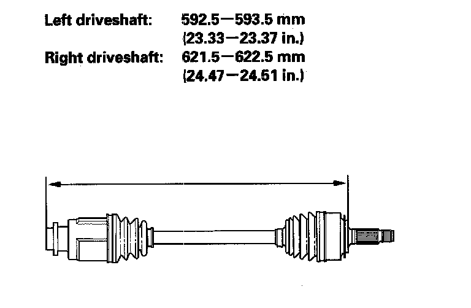
9. Fit the boot (A) ends onto the driveshaft (B) and outboard joint (C).
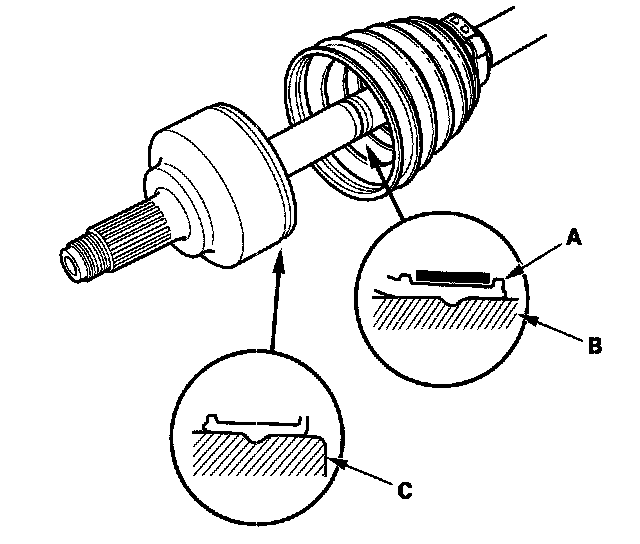
10. Install the new low profile band and ear clamp band onto the boot.
11. Install the boot band on the other end of the boot, and repeat step 10.